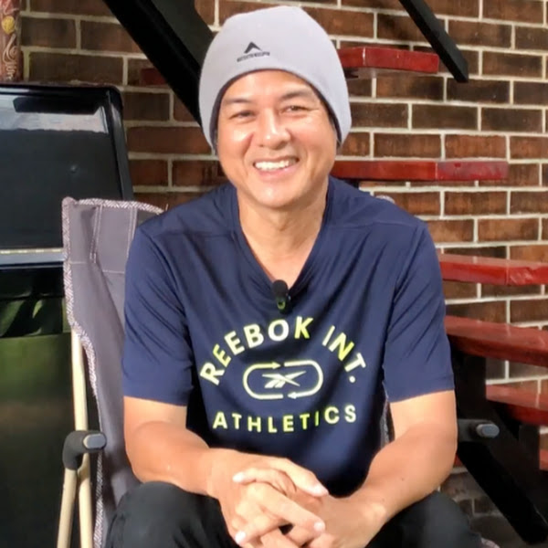

Saat Ini
Saya pernah berada di fase yang sibuk.
Mengejar, membangun, dan terus bergerak.
Sampai suatu titik,
saya mulai melihat bahwa hidup tidak hanya tentang pencapaian.
Hari ini, saya memilih hidup lebih pelan.
Lebih sadar. Lebih sederhana.